Mobile Software Engineer
Construyo apps Android sólidas, útiles y listas para crecer.
Soy Alex Céspedes Sánchez, ingeniero de sistemas con más de 9 años de experiencia creando aplicaciones Android nativas, soluciones con React Native y plataformas técnicas como Androfast.
Disponible para proyectos móviles
Arquitectura móvil con sentido práctico.
Trabajo desde la definición técnica hasta la entrega: arquitectura Android, consumo de APIs, persistencia local, rendimiento, integración backend y acompañamiento a equipos. Me gusta que el código sea claro hoy y sostenible dentro de seis meses.
Trabajo destacado
Proyectos
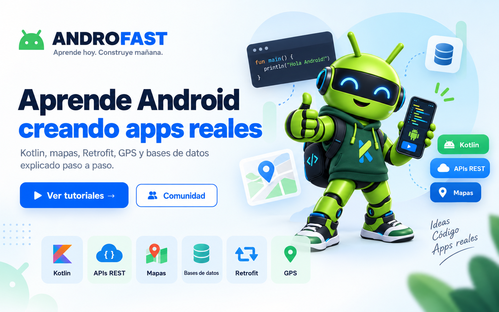
Producto propio
Androfast
Sitio técnico en español sobre Android, tutoriales, soluciones y herramientas para desarrolladores. Combina contenido educativo con recursos prácticos.
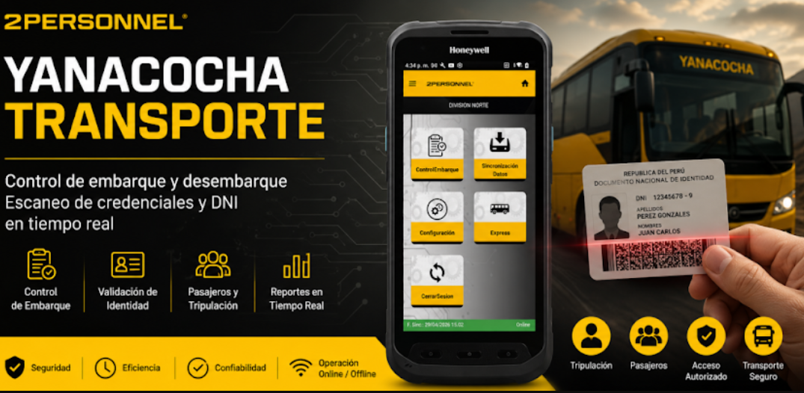
White Lion Technology / Minería
Yanacocha Transporte
Aplicación Android para optimizar y controlar el embarque y desembarque en operaciones de transporte corporativo. Incluye validación de identidad, control de pasajeros y soporte para operación online/offline.
Reconocimiento facial
LocFace
Plataforma de reconocimiento facial para control de acceso, con aplicación Android, panel web, API segura, administración de personas y backend Node.js/Express sobre PostgreSQL.
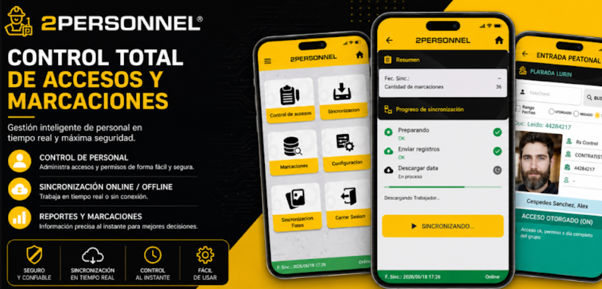
White Lion Technology / Accesos
New Accesos Owens
Aplicación Android publicada en Google Play para procesos de acceso y validación operativa. Participé desde White Lion Technology en el desarrollo móvil orientado a uso empresarial.
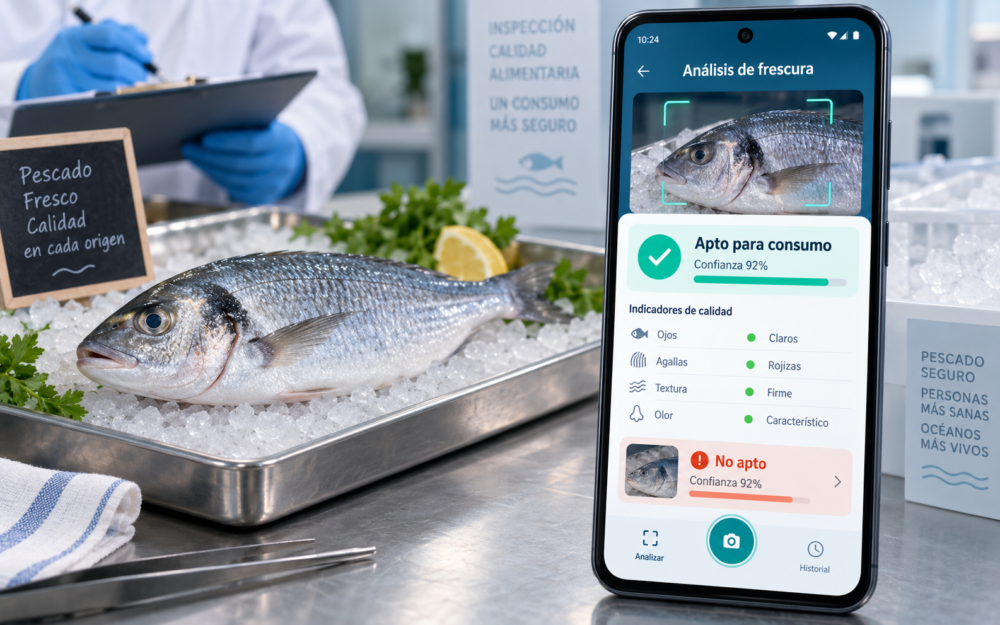
Android / IA
SIADE
Aplicación Android para reconocer si un pescado es apto o no apto para el consumo, integrando TensorFlow Lite, Python, backend PHP, MySQL y flujos de validación en campo basados en evaluación sensorial y el método QIM.
Ver certificado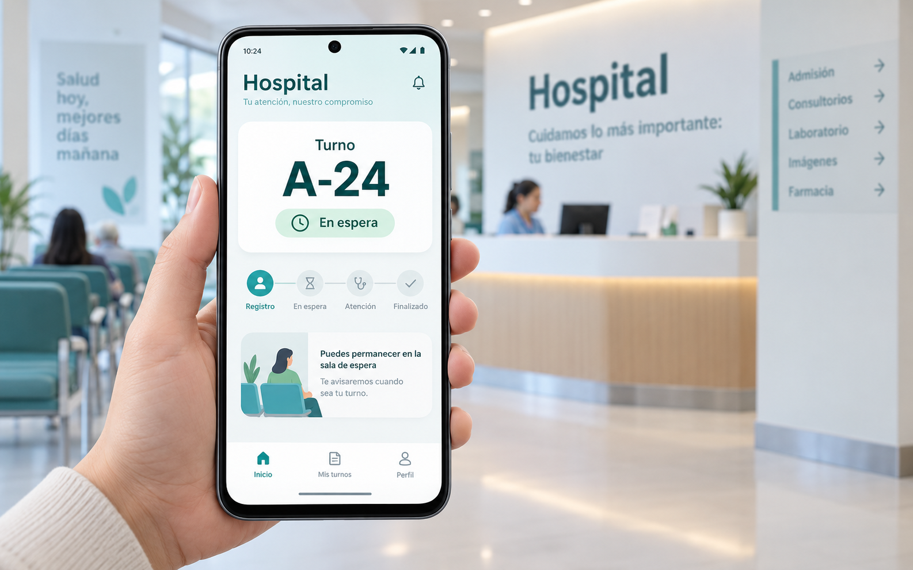
Municipalidad
Turnero Digital
Aplicación Android para entregar turnos a las personas que llegan a atenderse al hospital, evitando colas y reduciendo la necesidad de sacar citas presencialmente.
Ver certificadoControl operativo
Accesos, asistencia y transporte
Desarrollo de soluciones Android para control de acceso online/offline, asistencia, validación de personal y operaciones de transporte. Estos sistemas se enfocaban en operar en campo incluso con conectividad limitada.
Qué puedo construir
Servicios
Aplicaciones Android nativas
Desarrollo con Kotlin y Java, arquitectura MVVM/Clean Architecture, Retrofit, persistencia local y patrones pensados para escalabilidad y mantenimiento.
Integración backend y APIs
Consumo e integración de APIs REST/SOAP, creación de servicios con .NET/PHP y conexión sólida entre aplicaciones móviles, reglas de negocio y datos.
Datos y operación en campo
Modelado y optimización con SQL Server, MySQL, SQLite y Realm, incluyendo escenarios online/offline para transporte, asistencia y control de accesos.
Trayectoria
Experiencia
Software Engineer / Mobile Squad Lead
White Lion Technology - Remoto, Lima
- Liderazgo de squad móvil y definición de arquitectura.
- Desarrollo Android con Kotlin/Java y soluciones React Native.
- Creación y mantenimiento de APIs con C#/.NET y procedimientos SQL Server.
- Integración entre frontend móvil, backend, persistencia local y buenas prácticas MVVM/SOLID.
Desarrollador Android
AMA - Proyecto SIADE
- Integración de modelos de IA con TensorFlow Lite.
- Conexión entre app Android, backend PHP y MySQL.
Desarrollador móvil
Peru Apps, Virtual 3D Sistemas Corporativos y Sistemas Info24
- Apps Android nativas, geolocalización, APIs y bases de datos.
- Mantenimiento web, servicios y sistemas para clientes corporativos.
Stack
Habilidades técnicas
Mobile
Arquitectura
Backend y datos
Respaldo
Educación y certificaciones
Formación universitaria, cursos técnicos y certificados vinculados a desarrollo móvil, seguridad, backend y proyectos reales entregados.
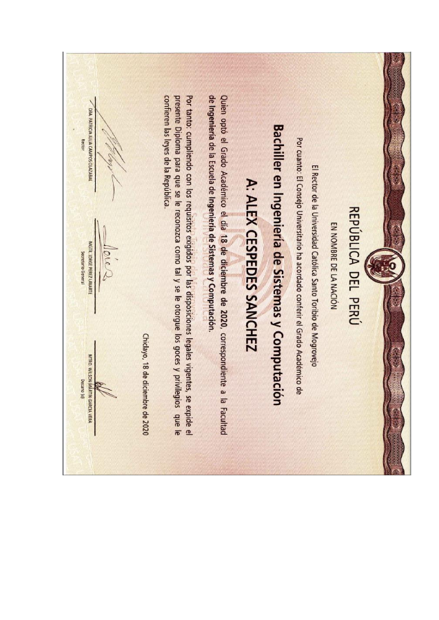
Universidad Bachiller en Ingeniería de Sistemas, Computación e InformáticaUniversidad Católica Santo Toribio de Mogrovejo.
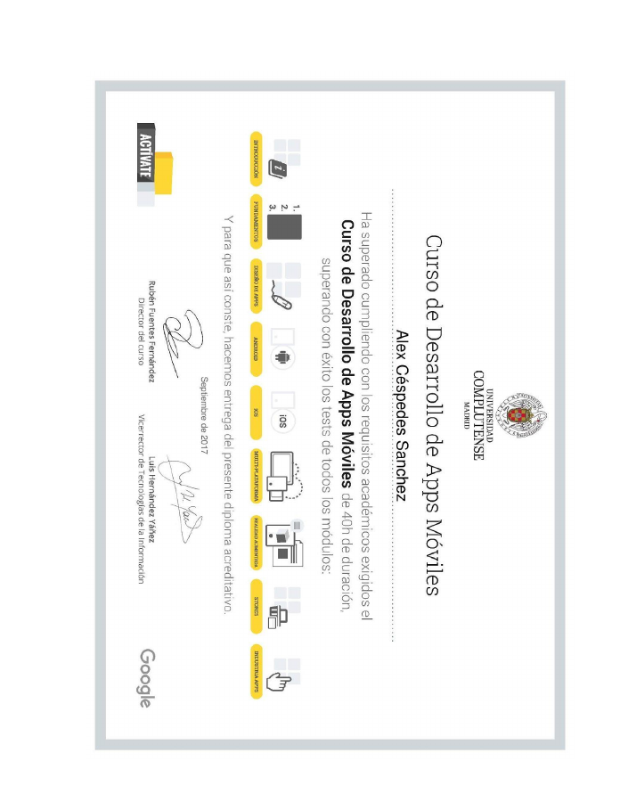
Android Curso de Desarrollo de Apps MóvilesFormación práctica enfocada en construcción de aplicaciones móviles.
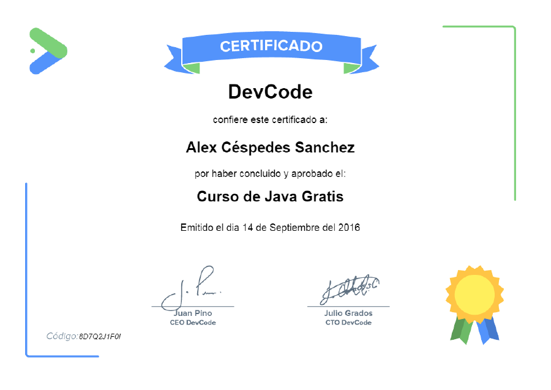
Backend / Mobile JavaBase sólida para desarrollo Android nativo, lógica de negocio y mantenimiento de sistemas.
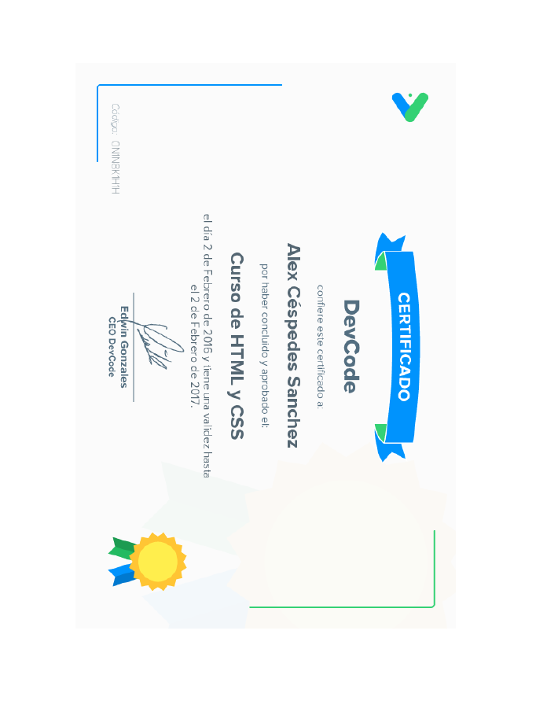
Web HTML y fundamentos webConocimientos para interfaces web, estructura semántica y publicación de contenido técnico.
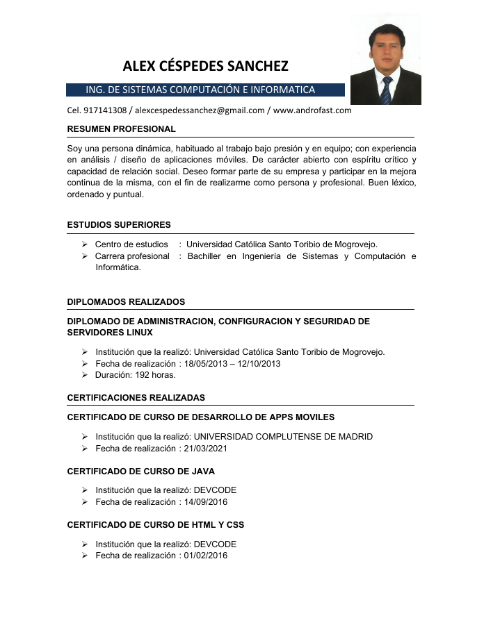
Seguridad Introducción a la seguridad de la informaciónFundamentos de protección de datos, buenas prácticas y gestión de riesgos técnicos.
Infraestructura Administración y seguridad en LinuxAdministración de servidores, hardening básico y soporte a entornos técnicos.
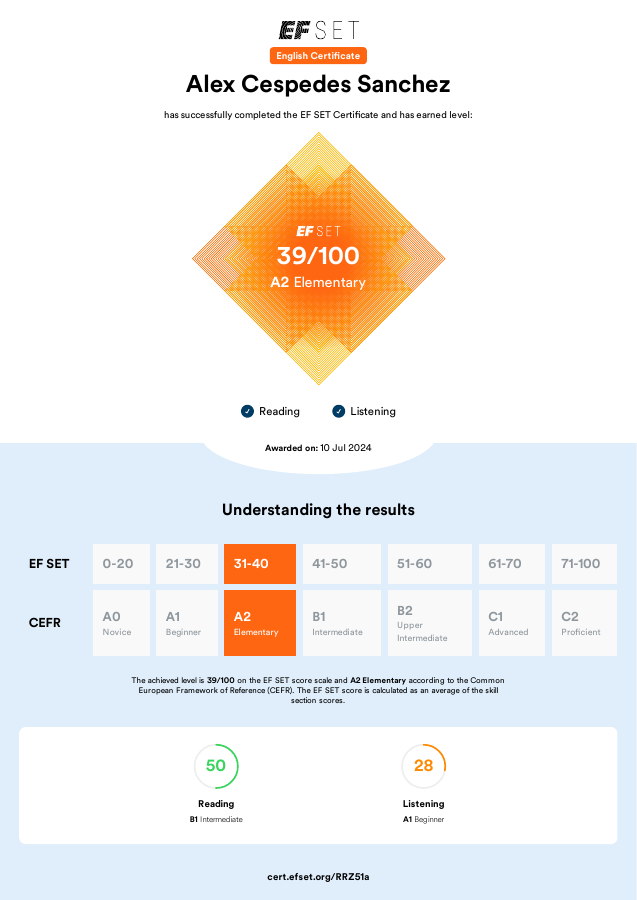
Idiomas Inglés A2EF SET, credencial RRZ51a.
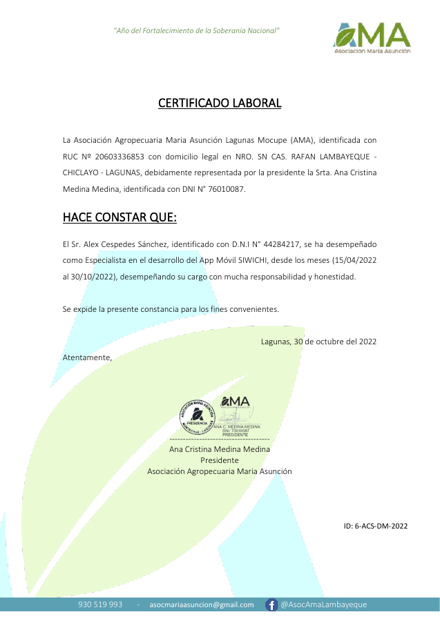
Experiencia certificada Proyecto SIADE - AMAReconocimiento de pescado apto o no apto para consumo con app Android e IA.
Contacto